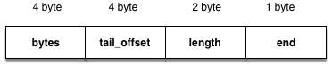
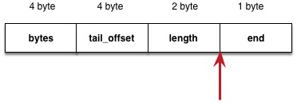
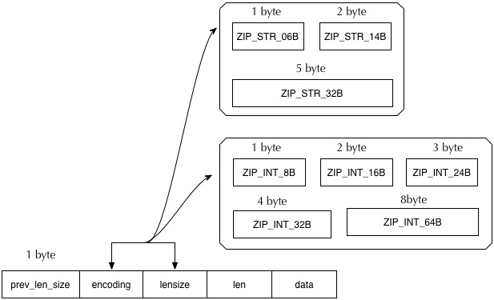

压缩列表 ziplist
[TOC]
简介
压缩列表是一个通用的线性列表，主要的用途是压缩内存的使用，不像其他的各种通用列表，其中的所有元素都只能用指针来表示，压缩列表为各种类型及各种尺寸的元素提供了不同的保存形式，以尽量节约各种元素占用的内存。
最便捷的使用方式应该是，针对自己的不同类型，将 ziplist 再进行一层简单的封装，以提高使用上的便捷跟内存的节约。
而作为一个列表，他的操作基本都是以 O(n) 的方式存在，所以对于有效率要求的，应该使用 skiplist 或者 vector 等类型。
实现
ziplist 的定义
压缩列表在表现形式上只是一个字节数组，所以无需多余的类型定义，所有的操作都基于分配的内存块以及操作接口即可。
创建一个 ziplist
因为没有确切的结构定义，所以这次我们只能从 ziplist 的初始化函数中来推敲其内存结构，先从代码开始
#define ZIPLIST_BYTES(zl) (*((uint32_t *)(zl)))
#define ZIPLIST_TAIL_OFFSET(zl) (*((uint32_t *)((zl) + sizeof(uint32_t))))
#define ZIPLIST_LENGTH(zl) (*((uint32_t *)((zl) + sizeof(uint32_t) * 2)))
#define ZIPLIST_HEADER_SIZE (sizeof(uint32_t) * 2 + sizeof(uint16_t))
#define ZIPLIST_ENTRY_HEAD ((zl) + ZIPLIST_HEADER_SIZE)
#define ZIPLIST_ENTRY_TAIL(zl) ((zl) + intrev32ifbe(ZIPLIST_TAIL_OFFSET(zl)))
#define ZIPLIST_ENTRY_END(zl) ((zl) + intrev32ifbe(ZIPLIST_BYTES(zl)) - 1)
unsigned char *ziplistNew(void) {
// 结构的 header 大小，确定是 4 * 2 + 2 + 1 = 10 byte
unsigned int bytes = ZIPLIST_HEADER_SIZE + 1;
unsigned char *zl = zmalloc(bytes);
// 设置前四个字节为 header 的长度
ZIPLIST_BYTES(zl) = intrev32ifbe(bytes);
// 设置 tailoffset 为 header 的长度
ZIPLIST_TAIL_OFFSET(zl) = intrev32ifbe(ZIPLIST_HEADER_SIZE);
// 设置第 9-10 个字节为 0，可以看出 9-10 表示长度
ZIPLIST_LENGTH(zl) = 0;
// 最后一个位用特殊的位表示结束
zl[bytes-1] = ZIP_END;
return zl;
}
经过这一步，可以大致确定空的 ziplist 结构为：

往 ziplist 中插入新数据
接下来尝试往 ziplist 中加入新的元素，加入元素前先看看具体的添加元素的接口定义。
#define ZIPLIST_HEAD 0
#define ZIPLIST_TAIL 1
unsigned char *ziplistPush(unsigned char *zl, unsigned char *s, unsigned int slen, int where) {
unsigned char *p;
p = (where == ZIPLIST_HEAD) ? ZIPLIST_ENTRY_HEAD(zl) : ZIPLIST_ENTRY_END(zl);
return __ziplistInsert(zl, p, s, slen);
}
从以上定义可以大致得到接口的解释：
- zl 是
ziplist的指针 - s 是新元素的指针
- slen 是新元素的大小
- where 是新元素要添加的位置，添加元素只能添加到 head 或者 tail, 所以他只能是以下两种取值之一：
- ZIPLIST_HEAD
- ZIPLIST_TAIL
接着做的是根据 where 找到对应的 head 或者 tail 元素， 并将其保存在指针 p 之中，然后转调 __ziplistInsert 函数，从名称即可看出它是负责将新元素插入到 ziplist 的元素旁*（前或后？）*
接着我们先看看怎么获取 head 或者 tail 元素。
// 获取 head 元素
#define ZIPLIST_ENTRY_HEAD(zl) ((zl) + ZIPLIST_HEADER_SIZE)
// 获取 tail 元素
#define ZIPLIST_ENTRY_TAIL(zl) ((zl) + intrev32ifbe(ZIPLIST_TAIL_OFFSET(zl)))
获取 head 的操作很简单直接将指针加上 header 的尺寸，也就是 10。那也就是说，头元素会放在 length 跟 end 之间

而获取 tail 的操作则是将指针加上 tail_offset 这个字段的值，说明了 tail_offset 是用来保存整个 ziplist 所有元素的大小。
接着进入插入元素的逻辑
#define ZIP_DECODE_PREVLENSIZE(ptr, prevlensize) do { \
if ((ptr)[0] < ZIP_BIGLEN) { \
(prevlensize) = 1; \
} \
else { \
(prevlensize) = 5; \
} \
while (0); \
#define ZIP_DECODE_PREV(ptr, prevlensize, prevlen) do { \
ZIP_DECODE_PREVLENSIZE(ptr, prevlensize); \
if ((prevlensize) == 1) { \
(prevlen) = (ptr)[0]; \
} \
else if ((prevlensize) == 5) { \
assert (sizeof((prevlensize)) == 4); \
memcpy(&(prevlen), ((char *)(ptr) + 1, 4); \
memrev32ifbe(&prevlen); \
} \
} while (0);
static unsigned char *__ziplistInsert(unsigned char *zl, unsigned char *p, unsigned char *s, unsigned int slen) {
size_t curlen = intrev32ifbe(ZIPLIST_BYTES(zl)), reqlen;
unsigned int prevlensize, prevlen = 0;
size_t offset;
int nextdiff = 0;
unsigned char encoding = 0;
long long value = 123456789;
zlentry tail;
// 如果指定的位置不是结束标示符，则说明列表不为空
if (p[0] != ZIP_END) {
// 获取 p 前一个节点长度的类型以及前一个节点的长度
// 类型有两种，一种是 1 个字节的，一种是 5 个字节的，取决于 p[0] 是否大于 ZIP_BIGLEN (254)
ZIP_DECODE_PREV(p, prevlensize, prevlen);
}
// 如果要插入的位置是最后，则确认 ziplist 是否为空
// 如果不为空，则获取当前列表的最后一个节点的长度，并保存
// 到 prevlen 中
else {
unsigned char *ptail = ZIPLIST_ENTRY_TAIL(zl);
if (ptail[0] != ZIP_END) {
prevlen = zipRawEntryLength(ptail);
}
}
// ...
}
上文中的省略号是即将处理的插入逻辑，我们先停下来，看看 zipRawEntryLength 的具体实现，他是为了获取指定节点所占用的内存大小，所以在这里，我们可以大概的探索一下节点的具体结构。
探索 ziplist 中存储元素的结构
statuc unsigned int zipRawEntryLength(unsigned char *p) {
unsigned int prevlensize, encoding, lensize, len;
// 解码上一个节点的长度表示，1 或 5 个字节
ZIP_DECODE_PREVLENSIZE(p, prevlensize);
ZIP_DECODE_LENGTH(p + prevlensize, encoding, encoding, lensize, len);
return prevlensize + lensize + len;
}
从上面的实现大致可以推算出，一个 entry 的内容由三个部分组成，一个是前一个节点的长度尺寸（这里之所以用尺寸，是因为他不是指上一个节点的大小，而是指上一个节点使用了多少个字节）+ 当前节点的长度尺寸 + 当前节点的内容尺寸。
首先是如何看上一个节点的尺寸, 从第一个字节的大小来判断上一个节点的大小，这里只分两种情况，一种是 1 个字节，另一种是 5 个字节
#define ZIP_DECODE_PREVLENSIZE(ptr, prevlensize) do { \
if ((ptr)[0] < ZIP_BIGLEN) { \
(prevlensize) = 1; \
} else { \
(prevlensize) = 5; \
} \
} while (0); \
接下来我们看到他使用 p + prevlensize 作为 ZIP_DECODE_LENGTH 的参数，说明 [p, p + prevlensize] 这个区间存放的就是上一个节点的长度，而这个长度分两种类型，小于 ZIP_BIGLEN 的使用一个字节，第一个字节存放一个特殊值，剩下的 4 个字节就是大于 ZIP_BIGLEN 的长度表示方式。
// 0xC0 = 1100 0000 与下面的 0x3F = 0011 1111 相呼应
#define ZIP_STR_MASK 0xC0 // 192
#define ZIP_INT_MASK 0x30 // 48
#define ZIP_STR_06B (0 << 6) // 0
#define ZIP_STR_14B (1 << 6) // 64
#define ZIP_STR_32B (2 << 6) // 128
#define ZIP_INT_16B (0xC0 | 0 << 4) // 192
#define ZIP_INT_32B (0xC0 | 1 << 4) // 192 | 16 = 208
#define ZIP_INT_64B (0xC0 | 2 << 4) // 192 | 32 = 224
#define ZIP_INT_24B (0xC0 | 3 << 4) // 192 | 48 = 240
#define ZIP_INT_8B 0xFE // 254
#define ZIP_INT_IMM_MASK 0x0F // 15
#define ZIP_INT_IMM_MIN 0xF1 // 241
#define ZIP_INT_IMM_MAX 0xFD // 253
#define ZIP_INT_IMM_VAL(v) (v & ZIP_INT_IMM_MASK)
// 获取 entry 的编码
#define ZIP_ENTRY_ENCODING(ptr, encoding) do { \
(encoding) = (ptr)[0]; \
if ((encoding) < ZIP_STR_MASK) \
(encoding) &= ZIP_STR_MASK; \
} while (0);
#define ZIP_DECODE_LENGTH(ptr, encoding, lensize, len) do { \
ZIP_ENTRY_ENCODING((ptr), (encoding)); \
if ((encoding) < ZIP_STR_MASK) { \
// ZIP_STR_06B 编码，以一个字节保存长度，并且总长度 \
// 小于等于 63 -> MAX = 63
// & 0x3f 的意思就是，放弃用于判断编码的高 2 位
// 因为最高的两位用来放对应的 MASK 标示了
if ((encoding) == ZIP_STR_06B) { \
(lensize) = 1; \
(len) = (ptr)[0] & 0x3F; \
// ZIP_STR_14B 编码，以两个字节保存长度，长度计算方式为 \
// (byte1 & 63) * 256 + byte2 -> MAX = 16383
} else if ((encoding) == ZIP_STR_14B)) { \
(lensize) = 2; \
(len) = (((ptr)[0] & 0x3F) << 8) | (ptr)[1]; \
// ZIP_STR_32B 编码，以四个字节保存长度，长度计算方式为 \
// byte1 * 16777216 + byte2 * 65536 + \
// byte3 * 256 + byte4 \
} else if ((encoding) == ZIP_STR_32B) { \
(lensize) = 5;
(len) = ((ptr)[1] << 24 | \
((ptr)[2] << 16 | \
((ptr)[3] << 8 | \
((ptr)[4]); \
} \
} else { \
assert(NULL); \
} \
} else { \
(lensize) = 1; \
(len) = zipIntSize(encoding); \
} \
} while (0);
从获取编码的实现 ZIP_ENTRY_ENCODING 来看，第一个字节保存的就是编码的类型，而对编码类型的管理则主要分为两种类型，这两种类型以 192 为边界（即 ZIP_STR_MASK），小于他的即是 STR 编码，否则是 INT 编码，最后则是 INT_IMM 类型的编码。
所以在 ZIP_DECODE_LENGTH 的实现中，也是以 ZIP_STR_MASK 为边界，处理各种不同的编码。
以下是 STR 编码的计算方式
ZIP_STR_06B 编码，以一个字节保存长度，并且总长度小于等于 63
MAX = 63
ZIP_STR_14B 编码，以两个字节保存长度，长度计算方式为
(byte1 & 63) * 256 + byte2 -> MAX = 16383
ZIP_STR_32B 编码，以四个字节保存长度，长度计算方式为
byte1 * 16777216 + byte2 * 65536 + byte3 * 256 + byte4
最后还有 Int 类型的处理方式，他被实现在 zipIntSize 中，我们来看看具体的实现
static unsigned int zipIntSize(unsigned char encoding) {
switch(encoding) {
case ZIP_INT_8B: return 1;
case ZIP_INT_16B: return 2;
case ZIP_INT_24B: return 3;
case ZIP_INT_32B: return 4;
case ZIP_INT_64B: return 8;
default: return 0;
}
assert(NULL);
return 0;
}
都是简单的通过类型来返回对应的字节数。 通过以上的定义，我们可以得出 entry 的大致定义： 
整个 entry 的大小取决于使用什么 encoding，当使用 STR 编码时，按照不同的类型来设置 lensize 跟 len，当使用 INT 编码时，则 lensize 始终为 1，len 则取决于使用整型的长度.
继续插入逻辑
经过上面一大坨的分析 entry 结构跟获取前一个节点的长度之后，我们继续上文插入新元素的逻辑。
static unsigned char *__ziplistInsert(unsigned char *zl, unsigned char *p, unsigned char *s, unsigned int slen) {
// ....
// 尝试对要插入的元素进行编码, 具体的做法是尝试把 s 转换为数字，
// 然后根据数值大小判断使用什么编码
if (zipTryEncoding(s, slen, &value, &encoding)) {
// 编码成功，则说明 s 可以转换为数字，以 INT 类型的编码确定 s 压缩后的尺寸
reqlen = zipIntSize(encoding);
}
else {
// 如果编码成 INT 失败，则直接使用字符串 s 的长度 slen
reqlen = slen;
}
// 接着根据 prevlen 尝试对 prevlen 进行编码，并返回编码的长度
// 该函数的实现是：
// 如果第一个参数不为 null，则将具体的长度写入第一个参数
// 否则直接返回 prevlen 使用的长度
reqlen += zipPrevEncodeLength(NULL, prevlen);
// 根据 encoding 跟 slen 编码长度信息，分析得出要使用什么编码来保存长度信息。
// 具体的实现为：
// 如果第一个参数不为空，会把编码后的长度信息写入第一个参数，
// 否则直接返回编码长度这里是直接返回编码后的长度
reqlen += zipEncodeLength(NULL, encoding, slen);
// 如果插入点不是最后一个元素，则要先将下一个节点的 prevlensize 减去插入点的长度
// 比如旧的 prev 节点的要用 5 个字节来保存，而新节点的长度只需要 1 个字节，
// 那 p 的 上关于前一个节点长度的信息就要调整为 1 个字节，也就是要缩减 4 个字节
// 所以得到 1 - 5 == -4
nextdiff = (p[0] != ZIP_END) ? zipPrevLenByteDiff(p, reqlen) : 0;
// 保存 p 在现有 zl 的偏移量，因为接下来的 realloc 中，可能会改变 zl 的内存地址j
offset = p - zl;
// 重新调整内存大小，调整为：
// 当前 zl 的长度 + 新节点的长度 + p 新旧前置节点的长度差（可为负数）
zl = ziplistResize(zl, curlen + reqlen + nextdiff);
// 重新得到要插入新节点的位置信息
p = zl + offset;
// ...
}
上面代码的逻辑已经在注释中解释完了，基本就是：
- 计算新节点的前置长度所需的字节数
- 计算新节点的长度及内容所需的字节数
- 计算新旧前置节点长度的差值
- 重新调整内存
经过以上处理后，所有东西都已经就绪，可以开始将新节点插入 ziplist 了。
static unsigned char *__ziplistInsert(unsigned char *zl, unsigned char *p, unsigned char *s, unsigned int slen) {
// ....
// 如果插入点不为 zl 的结尾
if (p[0] != ZIP_END) {
// 将旧有的 p 节点移动到新的位置中，如果新节点与 p 的旧有前置节点长度有差值，
// 则把差值部分也复制过去
memmove(p + reqlen, p - nextdiff, curlen - offset - 1 + nextdiff);
// 然后设置 p 的前置节点信息为新插入的节点, 完成这一步后，
// 查新信息已被弥补，p 重新成为一个完整的节点
zipPrevEncodeLength(p + reqlen, reqlen);
// 然后更新 zl 的最后节点的偏移量信息，也就是用来获取最后一个节点的偏移量
// 其实就是将原有的长度，加上新节点的长度
ZIPLIST_TAIL_OFFSET(zl) =
intrev32ifbe(intrev32ifbe(ZIPLIST_TAIL_OFFSET(zl) + reqlen);
// 如果新节点之后的节点
tail = zipEntry(p + reqlen);
// 如果新节点的后续节点不为最末的节点，则还要再加上之前新旧两个前置节点的长度差
if (p[reqlen + tail.headersize + tail.len] != ZIP_END) {
ZIPLIST_TAIL_OFFSET(zl) =
intrev32ifbe(intrev32ifbe(ZIPLIST_TAIL_OFFSET(zl)) + nextdiff);
}
}
else {
// 这里表示 新的节点即是最终节点
ZIPLIST_TAIL_OFFSET(zl) = intrev32ifbe(p - zl);
}
// 如果有差值， p 后续的节点都可能需要重新调节前一个节点的尺寸
// __ziplistCasecadeUpdate 即是调整指定节点及其之后的所有节点对应的
// prevlensize 这个字段，直到遇见一个无需调整的。
if (nextdiff != 0) {
先获取 p 的 offset，jjj
offset = p - zl;
zl = __ziplistCasecadeUpdate(zl, p + reqlen);
p = zl + offset;
}
// 最终插入新节点
// 首先在 p 上面插入前一个节点的长度信息
// 然后插入 encoding 跟 p 的内容长度
// 接着根据两种编码的不同来插入最终的值
// 如果使用的是 STR 类型的编码，则直接复制对应的字符串进去
// 如果使用的是整数，则根据编码写入对应的字节数
// 最终更新 ziplist 的长度
p += zipPrevEncodeLength(p, prevlen);
p += zipEncodeLength(p, encoding, slen);
if (ZIP_IS_STR(encoding)) {
memcpy(p, s, slen);
}
else {
zipSaveInteger(p, value, encoding);
}
ZIPLIST_INCR_LENGTH(z, 1);
return zl;
}
接下来就只剩下两个调用还未解析了，分别是：扩展后续节点的前置节点长度信息，保存整数内容。 首先看看怎么来保存一个整数到 entry 中。
static void zipSaveInteget(unsigned char *p, int64_t value, unsigned char encoding) {
int16_t i16;
int32_t i32;
int64_t i64;
if (encoding == ZIP_INT_8B) {
// 八位整数，直接赋值
((int8_t *)p)[0] = (int8_t)value;
}
else if (encoding == ZIP_INT_16B) {
// 十六位整数，直接赋值，然后转换大小端
i16 = value;
memcpy(p, &i16, sizeof(i16));
memrev16ifbe(p);
}
else if (encoding == ZIP_INT_24B) {
// 24 位整数，移除高八位，因为高八位肯定为 0
// 然后转换为小端表示法，所以下面可以用 (uint8_t *) + 1 来移动数据
i32 = value << 8;
memrev32ifbe(&i32);
memcpy(p, ((uint8_t *)&i32) + 1, sizeof(i32) - sizeof(uint8_t));
}
else if (encoding = ZIP_INT_32B) {
// 32 位整数，直接保存
i32 = value;
memcpy(p, &i32, sizeof(i32));
memrev32ifbe(&i32);
}
else if (encoding = ZIP_INT_64B) {
// 32 位整数，直接保存
i64 = value;
memcpy(p, &i64, sizeof(i64));
memrev64ifbe(&i32);
}
else if (encoding >= ZIP_INT_IMM_MIN && encoding <= ZIP_INT_IMM_MAX) {
// 数字直接存储在 encoding 的剩余空间内
}
else {
assert(NULL);
}
}
OK，最后剩下的就是如何扩充插入点之后的那些元素的前置节点的长度信息了。
static unsigned char * __ziplistCascadeUpdate(unsigned char *zl, unsigned char *p) {
size_t curlen = intrev32ifbe(ZIPLIST_BYTES(zl)), rawlen, rawlensize;
size_t offset, noffset, extra;
unsigned char *np;
zentry cur, next;
while (p[0] != ZIP_END) {
// 获取当前节点
cur = zipEntry(p);
// rawlen 表示当前节点的大小
rawlen = cur.headersize + cur.len;
// 然后获取当前节点的长度应该用多少个字节来表示
rawlensize = zipPrevEncodeLength(NULL, rawlen);
// 如果当前节点已经是最后一个节点，则退出调整
// 因为已经没有后续的节点需要记录他的大小了
if (p[rawlen] == ZIP_END) break;
// 获取下一个节点
next = zipEntry(p + rawlen);
// 如果下一个节点的前置节点所用的大小跟当前节点的一样，说明不需要进行调整
if (next.prevrawlen == rawlen) break;
// 如果后续节点用来保存前置节点的长度小于当前节点所需的长度，
// 则需要申请新的空间，然后把整个内存块往后移，然后调整长度信息
if (next.prevrawlensize < rawlensize) {
// 保存 p 的偏移量，因为接下来会 ReAlloc
offset = p - zl;
// extra 保存还需要多少内存才足够保存长度信息
extra = rawlensize - next.prerawlensize;
zl = ziplistResize(zl, curlen + extra);
p = zl + offset;
// np 指向 next 节点，
// noffset 指向 next 的偏移量
np = p + rawlen;
noffset = np - zl;
// 保证如果 下一个节点不是最后一个节点，则更新 ziplist 的长度为更新后的长度
// 也就是加上长度的差值
if ((zl + intrev32ifbe(ZIPLIST_TAIL_OFFSET(zl)) != np) {
ZIPLIST_TAIL_OFFSET(zl) =
intrev32ifbe(intrev32ifbe(ZIPLIST_TAIL_OFFSET(zl)) + extra);
}
// 往后挪动下一个节点及之后的所有元素
// np + rawlensize 是目标区域
// np + next.prevrawlensize, 是 next 节点原本的内存区域（除了 prevlenrawlensize
// 下面则是需要移动的字节数，通过
// curlen - noffset - next.prevrawlensize - 1
// 计算出除了 next 节点及其之后所有元素的大小，也就是所需移动的元素，-1 表示不包括 ZIP_END
memmove(np + rawlensize,
np + next.prevrawlensize,
curlen - noffset - next.prevrawlensize - 1);
// 将 p 指向下一个节点，以便更新后续节点
p += rawlen;
// curlen 加上差值，用于更新整体的长度
curlen += extra;
}
// 否则说明后续节点用来保存前置节点的长度大于或等于当前节点所需的长度，
else {
// 当大于时，为了避免频繁移动内存带来的开销，直接使用较大的内存来放置
// 只需要小块内存的长度信息
if (next.prevrawlensize > rawlensize) {
zipPrevEncodeLengthForceLarge(p + rawlen, rawlen);
}
else {
// 进到这里说明使用的长度是相同的，所以直接设置长度信息
zipPrevEncodeLength(p + rawlen, rawlen);
}
}
}
}
// 然后看看 zipPrevEncodeLengthForceLarge 的实现
// 可以看到，他是直接使用 ZIP_BIGLEN 编码来保存长度的
static void zipPrevEncodeLengthForceLarge(unsigned char *p, unsigned int len) {
if (p == NULL) return;
p[0] = ZIP_BIGLEN;
memcpy(p + 1, &len, sizeof(len));
memrev32ifbe(p + 1);
}
插入新数据到这里已经结束了，接着我们看看那个为了方便而使用的 zipEntry 函数, 从这个函数里我们可以验证之前推测出来的节点结构的正确性。
static zlentry zipEntry(unsigned char *p) {
zlentry e;
ZIP_DECODE_PREVLEN(p, e.prevrawlensize, e.prevrawlen);
ZIP_DECODE_LENGTH(p + e.prevrawlensize, e.encoding, e.lensize, e.len);
e.headersize = e.prevrawlensize + e.lensize;
e.p = p;
return e;
}
这里面的几个宏我们都已经分析过了，大致就是：
- 通过
ZIP_DECODE_PREVLEN得到- 前置节点的长度所使用的字节数
e.prevrawlensize - 前置节点的长度
e.prevrawlen - 当前节点的编码
e.encoding - 当前节点的长度所使用的字节数
e.lensize - 当前节点的长度
e.len
- 前置节点的长度所使用的字节数
- 然后通过上面的信息，得到 header 的长度
e.headersize
Ok,到这里我们已经可以确定我们前面所做的所有分析都是正确的了。
早知道先看这个函数了 ~T.T~
查找
ziplist 提供了许多的查找接口，按索引位置查找，按内容查找等，我们下面来分析几个主要的接口。
查找元素
首先查看函数原型
unsigned char *ziplistFind(unsigned char *p, unsigned char *vstr, unsigned int vlen, unsigned int skip);
从 p 开始查找，vstr 是要查找元素的指针，vlen 是 vstr 的长度，这里的 p 跟 vstr 都是当前 ziplist 的元素。所以所有对节点的的操作都可以直接使用。
unsigned char *ziplistFind(unsigned char *p, unsigned char *vstr, unsigned int vlen, unsigned int skip) {
int skipcnt = 0;
unsigned char vencoding = 0;
long long vll = 0;
// 循环直到最后一个节点
while (p[0] != ZIP_END) {
unsigned int prevlensize, encoding, lensize, len;
unsigned char *q;
// 获取当前节点的前一个节点使用了多少个字节来保存长度信息
ZIP_DECODE_PREVLENSIZE(p, prevlensize);
// 获取当前节点的编码，长度使用了多少个字节，以及实际内容的长度
ZIP_DECODE_LENGTH(p + prevlensize, encoding, lensize, len);
// 将 q 指向当前节点的内容区域
q = p + prevlensize + lensize;
// 检查是否已经跳过了强制跳过的元素数
if (skipcnt == 0) {
// 开始分析 p 是否目标节点
// 如果当前节点是字符串，则世界比较内容是否相同，相同的话直接返回当前节点
if (ZIP_IS_STR(encoding)) {
if (len == vlen && memcmp (q, vstr, vlen) == 0) {
return p;
}
}
else {
// 否则就是数字
if (vencoding == 0) {
// 尝试对目标 vstr 进行编码，以得到其编码方式，如果编码失败，则将
// vencoding 设为 UCHAR_MAX, 避免下次再次尝试编码
if (!zipTryEncoding(vstr, vlen, &vll, &vencoding)) {
vencoding = UCHAR_MAX;
}
assert(vencoding);
}
// 如果之前的编码成功，则提取对应的数值保存到 ll 中
if (vencoding != UCHAR_MAX) {
long long ll = zipLoadInteger(q, encoding);
if (ll == vll) {
return p;
}
}
}
skipcnt = skip;
}
else {
skipcnt--;
}
// 如果比较不成功，则将 p 指向下一个节点
p = q + len;
}
}
整体的查找流程非常简单
- 获取当前节点的编码信息
- 检查是否已经跳过指定的元素
- 如果不是，直接进入下一节点
- 判断当前节点是否字符串
- 如果是，则直接比较长度跟内存块是否相同
- 如果不是，则说明是数字
- 如果还没尝试编码 vstr, 则尝试编码
- 编码成功，得到 vstr 的编码
- 编码失败，设置 vencoding 为 UCHAR_MAX，下次就无需再尝试编码
- 如果编码过，且编码成功，则提取数值进行比较傲
- 如果还没尝试编码 vstr, 则尝试编码
- 如果之前的比较都不成功，则指向下一个节点，重新开始上面的流程
获取指定索引的元素 ziplistIndex
同样的 ziplist 也支持按索引查找元素，只是这个操作的复杂度是线性的。
因为 ziplist 保存总体的长度，所以可以直接获取最后一个节点，并且每个节点保存了上一个节点的长度，所以支持逆序的遍历，在这两个特性的支持下， ziplist 的索引支持负数，-1 表示最后一个节点，以此类推。
unsigned char *ziplistIndex(unsigned char *zl, int index) {
unsigned char *p;
unsigned int prevlensize, prevlen = 0;
if (index < 0) {
index = (-index) - 1;
// 获取最后一个节点
p = ZIPLIST_ENTRY_TAIL(zl);
// 如果列表不为空，则进入遍历流程
if (p[0] != ZIP_END) {
// 获取前一个节点的长度，用于指向上一个节点
ZIP_DECODE_PREVLEN(p, prevlensize, prevlen);
// 如果还没移动到目标索引并且列表还没到头
while (prevlen > 0 && index--) {
// 指向上一个节点，并获取上一个节点的长度信息
p -= prevlen;
ZIP_DECODE_PREVLEN(p, prevlensize, prevlen);
}
}
}
else {
// 从头开始遍历 `ziplist`，直到遇到结尾或者到达指定的索引位置
p = ZIPLIST_ENTRY_HEAD(zl);
while (p[0] != ZIP_END && index--) {
p += zipRawEntryLength(p);
}
}
// 返回找到的节点，如果遇到结尾或者 `ziplist` 长度小于索引值，返回 NULL.
return (p[0] == ZIP_END || index > 0) ? NULL : p;
}
提取节点内容 ziplistGet
得到一个节点的指针后，可以得到其指向的内容，这个操作由 ziplistGet 来完成
unsigned int ziplistGet(unsigned char *p, unsigned char **str, unsigned int *slen, long long *sval) {
zlentry entry;
if (p == NULL || p[0] == ZIP_END) return 0;
if (sstr) *sstr = NULL;
entry = zipEntry(p);
if (ZIP_IS_STR(entry.encoding)) {
if (sstr) {
*slen = entry.len;
*sstr = p + entry.headersize;
}
}
else {
if (sval) {
*sval = zipLoadInteger(p + entry.headersize, entry.encoding);
}
}
return 1;
}
遍历列表
TODO